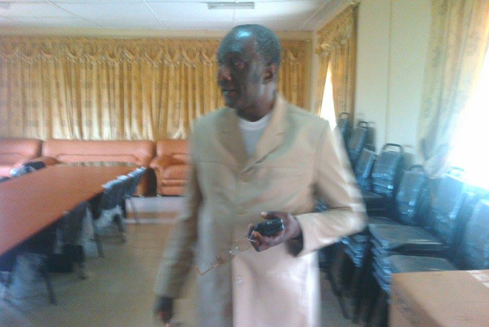

Toggle navigation
Institut Supérieur De Technologie De MAMOU
Accueil
Présentation
Départements
Département de Technique de laboratoire
Laboratoire Chimie
Laboratoire Biologie
Département Instrumentation et Mesure Physique
Département des sciences techniques
Département des sciences appliquées
Département Energétique
Département Technologie des Equipements Biomédicaux
Activités
Bibliothèque
Association des Anciens Etudiants et Amis de Telico
Fiche de renseignement
Contact

Mot du Directeur Général:
Cher visiteur,
Cher partenaire,
L’Institut Supérieur de Technologie de Mamou est heureux de vous accueillir sur son site Internet. En mon nom propre et au nom de tous le personnel, je vous souhaite donc la bienvenue sur cet espace virtuel de découverte de notre institution. Dans un monde où la conviction la mieux partagée est la fonction stratégique de l’éducation, de la formation et de la recherche, Notre Institut a fait le pari d'être le pôle de l’excellence en matière de projets pédagogiques novateurs, en adéquation avec les problématiques de développement de la Guinée et de l’Afrique. Pour réaliser cette ambition, elle fonde son action sur trois axes stratégiques:
1. La diversification et la professionnalisation de son offre de formation en adéquation avec la généralisation de l'adoption du système LMD
2. La constitution d'un plateau de recherche de haut niveau, avec des acteurs à fort potentiel pour impulser une nouvelle vision de la recherche en vue de proposer des options théoriques pertinentes aux décideurs et réaliser des expertises
3. Une gestion transparente et vertueuse des biens et ressources publics mis à la disposition de l’Université.
Notre personnel, qualifié et dévoué, consent chaque jour des sacrifices importants pour permettre à notre institution de relever les défis qu'implique sa mission et renforcer ainsi son niveau de performance. Tournée vers le futur et consciente de sa responsabilité dans la formation de la jeunesse Guinéene et africaine, l'IST ouvre une nouvelle ère de montée en puissance dans laquelle les missions, valeurs et objectifs qu’elle s’assigne sont pensés, conçus et mis en œuvre par des acteurs internes. Les défis sont nombreux. Ensemble nous les surmonterons pour pérenniser et renforcer les ambitions d’un Institut d’excellence au service du développement Bienvenue à l'Institut Supérieur de Technologie de Mamou Bonne visite. Bonne année universitaire!!!!
Docteur Cellou Kanté.